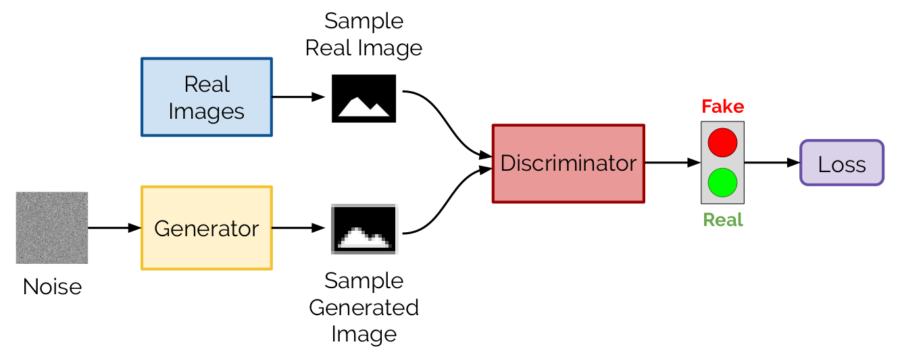
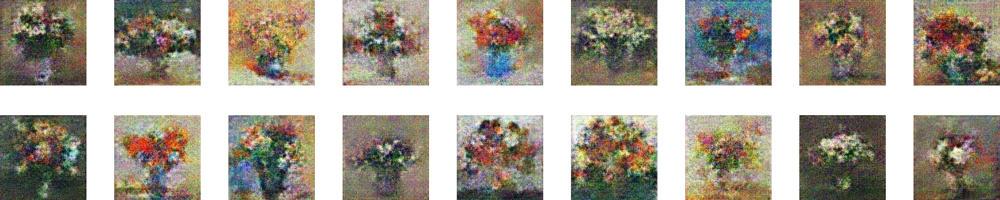
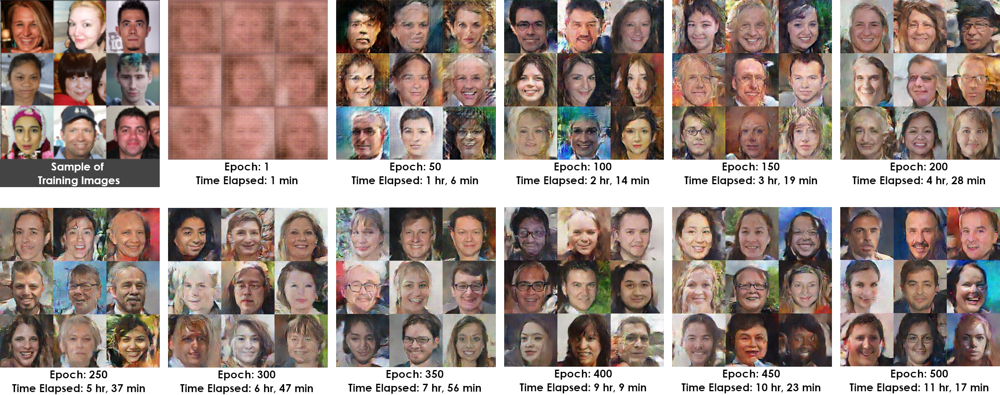
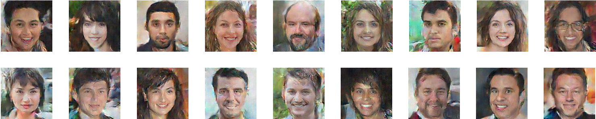
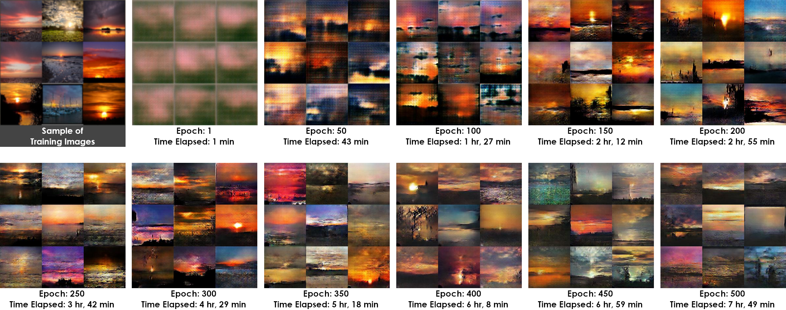
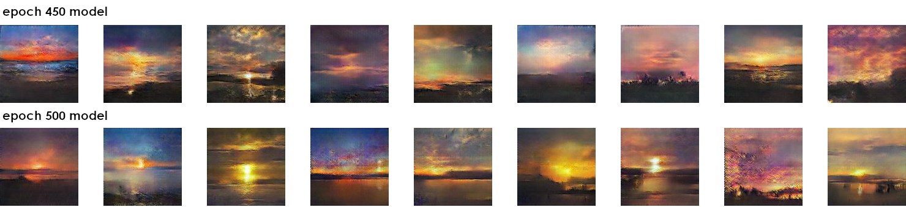
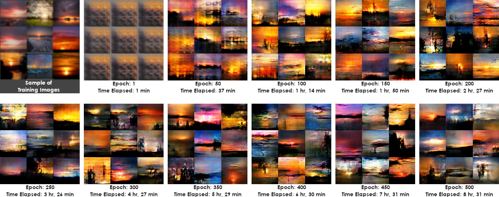
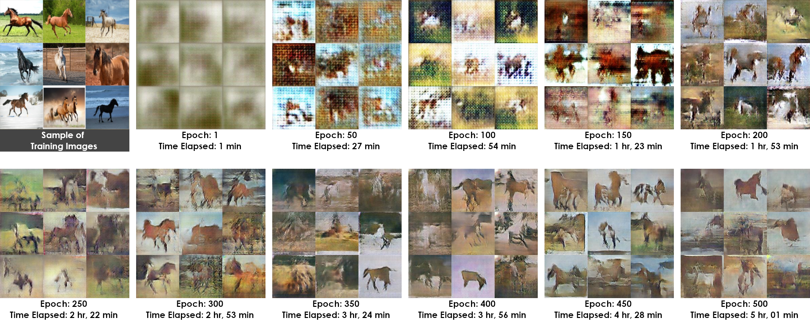

Generative Adversarial Networks
Google Applied Machine Learning Intensive
Mills College, Spring 2019
Claire Pang, University of San Francisco
Kyle Astroth, Mills College
AJ Bethel, Texas Woman's University
Generative Adversarial Networks (GANs) consist of two neural networks that are competing against each other. One neural network, the “generator” takes a random noise vector to produce fake images. The other network, the “discriminator” is fed real images, and uses those to determine if the fake images made by the generator are real or fake. The generator relies on feedback from the discriminator to get better at creating images, while the discriminator gets better at classifying between real and fake images. In our implementation, our generator and discriminator will be convolutional neural networks.
A popular metaphor is an art forger and art critic:
More specifically, the discriminator is fed (real) training images and learns to distinguish between what's real and what's fake. The generator is given a z-dimensional random noise vector and uses that to generate an image. This picture is then sent to the discriminator to return a value 1 (if real) or 0 (if fake). Once compared against the labels (ground truth: real or fake), the losses are computed. The generator and discriminator are then updated; thus over time, both get better at their jobs.
It's important that discriminator doesn't start off too strong, otherwise the generator won't get any information on how to improve itself. The generator doesn't know what the real data looks like; it relies on the discriminator's feedback. Only when the discriminator and generator are balanced do both improve, and hence lead to the generator producing realistic images.
The model used for this project was coded using Python, TensorFlow, and Nvidia’s CUDA toolkit. Due to the computational power required to train a GAN, we ran instances of our model using GPUs - both locally (Nvidia RTX 2060) and using Google Cloud Platform (Nvidia Tesla K80).
Much of our code was based on this notebook by simoninithomas. A corresponding tutorial, which goes more in depth about the code, is also available here. GANs are difficult to train and sensitive to hyperparameters (you don’t want the generator or discriminator overpowering each other). We tried the hyperparameters used in this notebook, as well as our own. The hyperparameters we tuned were: generator learning rate, discriminator learning rate, batch size, alpha (leak parameter for leaky ReLU), and beta (exponential decay rate for 1st moment in the optimizer). For batch size, it was required to use 32 when trained locally to avoid OOM errors.
The number of epochs run depended on how long we let the model train for, and whether we thought (based on the outputted images) the model was improving/getting worse. For more specific hyperparameters, please see our results below.
Our GAN consisted of two convolutional neural networks pitted against each other. The architecture used for this project is as follows:

From these "GAN hacks" it is recommended that:
We trained multiple GANs on different datasets, and the categories that we're satisified with the results are listed below. The code used resizes images to 128x128 and generates 128x128 sized images (may appear smaller on the website here). We modified the code as to save a version of the model every 50 epochs and generate a 3x3 grid of images after each epoch. Our training process, as well as a curated collection of our best generated images, are below.
This dataset consists of 1,487 flower paintings from wikiart.org and Google images. We included only paintings of flowers in vases.
GPU: Nvidia RTX 2060, learning rate: generator - 0.00002, discriminator - 0.000005, alpha: 0.2, beta: 0.5

jupyter notebook with code + full training
The following images are generated using the model saved at epoch 500.
This dataset consists of 3,785 faces from the FFHQ dataset. We used a subset of the 70,000 128x128 thumbnails dataset. The data was cleaned to include adults whose heads were facing forward with little to no obstruction of the face (caused by hats, sunglasses, etc). Photos that were eliminated from the dataset also included anomalies like: more than one person in the photo, and off-kilter photos where the adult pictured did not represent a face-forward headshot. We tried training a model with uncleaned data, and the results were much worse.
GPU: Nvidia RTX 2060, learning rate: generator - 0.0002, discriminator - 0.00005, alpha: 0.2, beta: 0.5
The following images are generated using the model saved at epoch 500.
This dataset consists of 2,349 sunsets scraped using the Flickr API.
GPU: Nvidia RTX 2060, learning rate: generator - 0.0002, discriminator - 0.00005, alpha: 0.5, beta: 0.5
jupyter notebook with code + full training
The following images are generated using the model saved at epoch 450 (top row) and epoch 500 (bottom row).
In addition to DCGANs, there are also various other implementations of GANs. For experimentation purposes, we also tried using a Wasserstein GAN (WGAN) on the same sunsets dataset to compare the results. The code we used is from goldesel23.
Based on the above results, we believe that our sunset DCGAN lead to better results. The WGAN is supposedly more stable and fixes problems like mode collapse, however a paper from Google Brain at NIPS 2018 found no evidence that other versions of GANs, including WGAN, consistently performed better than the original GAN.
How to best tune a GAN is an open research problem. Grid and random search for trying different hyperparmeters are not the best methods due to the computational power and time required to train a GAN. While doing preliminary research for this project, we were worried about tackling GANs because of the time required to train. Mostly, we only found unsure estimates for how long it took to train – hence, when showing our results, we include our actual training times to provide an estimate for what to expect. Additionally, we didn't find many resources for what didn't work, we mostly saw the final result but didn't see the process of getting there. Thus, we are including the below sections to talk about our entire process of working with GANs.
Overall, we noticed that larger datasets do make a difference – our faces dataset was the largest, and the generated images turned out the clearest as well.
Dataset: Same 1,487 flower paintings as used above

Model 3 is the model used in the above flower results section. Other models with different hyperparameters, were run and led to worse results.
The results from Model 1 at epochs 300/350 look similar to the results at epoch 500 in Model 3. However, we noticed that the flowers generated using epochs 300 and 350 with these hyperparameters resulted in a lesser quantity of images considered "good" and with less defined features. By letting it run to 500 epochs we experienced mode collapse (when all the generated images start to look the same - see epoch 500). As the generated images don't necessarily get better by training longer, we recommend saving multiple versions of the model during training.
Model 2 led to mode collapse quickly, which is likely due to the tuning of alpha and beta.
This dataset consists of 1,149 images of beaches from Google Images.
GPU: Nvidia RTX 2060, learning rate: generator - 0.00002, discriminator - 0.000005, alpha: 0.2, beta: 0.5

The beaches dataset was scraped from Google Images and consequently the data was extremely diversified. A “photography” tag and “teal” color tag were applied through Google’s search tools to present photographic representations of beaches. However, the images collected represented a number of different views of beaches, featuring details like palm trees, giant stone pillars, etc. Due to the relatively small size of the dataset (1,149 images), paired with extremely diversified data, the output was lesser than desired quality. We edited the learning rates and played with the extremely sensitive hyperparameters to no avail of a desired result.
This dataset consists of 1,001 dolphin images from Google Images.
GPU: Nvidia RTX 2060, learning rate: generator - 0.0002, discriminator - 0.00005, alpha: 0.2, beta: 0.5

The dolphins data was acquired from Google Images using the search terms “dolphin jumping out of water”, filtered by the color “blue” and “photography” as the type. An obstacle we faced in attaining “good” results was due to the data being too diversified. Despite our specified query being precise, the returned results contained 1,001 images which showed a diversity of dolphins in different orientations and numbers. We ran a second iteration of this model adjusting the generator and discriminator learning rates from 0.00005 to 0.000005 and 0.0004 to 0.00004, respectively. The output suggested an initial expectation of improved results, but at epoch 500, very little change was observed from the initial iteration.
This dataset consists of 1,412 horse images from Google Images.
GPU: Nvidia RTX 2060, learning rate: generator - 0.0002, discriminator - 0.00005, alpha: 0.5, beta: 0.5
After researching how to train GANs on animal imagery, we noted that GANs are notorious for producing distorted images of animals. This may be due to the complexities and intricacies of animal data (limbs should be correctly shaped and proportional to the rest of the body). After running an initial model which produced poor results, we edited each respective learning rate an additional degree, which did not prove to help the outcome. A potential solution would be to increase the size of the dataset to allow for the model to understand the dataset more clearly. Cleaning and reducing the diversity of images may also prove to be useful in attaining better results.
This dataset consists of 923 macaw images from Google Images.
GPU: Nvidia RTX 2060, learning rate: generator - 0.0002, discriminator - 0.00005, alpha: 0.2, beta: 0.5

The macaw dataset was scraped from Google Images using the search terms “red macaw” and filtered by “photography” and the color “red”. 923 images were used to train the model after eliminating anomalous images and rough cleaning of the raw dataset. The model seemingly had issues understanding the intricate details of the macaw face. General color patterns and a broad comprehension of the shape of macaws were evident in the generated output. Tinkering with hyperparameters proved little to no effect for improving the results, and additional data would be needed to provide better context to the model.
This dataset consists of 981 psychedelic artwork images from Google Images.
GPU: Nvidia RTX 2060, learning rate: generator - 0.0002, discriminator - 0.00005, alpha: 0.2, beta: 0.5

The psychedelic dataset was collected through scraping Google Images using the search terms “psychedelic artwork”; 981 images were obtained. Initially, the model seemed to show promise, but eventually ended in mode collapse over a number of epochs. The model was able to gain a general understanding of the number of colors intrinsic to psychedelic artwork, but due to the data being diverse and containing intricate patterns the model was unsuccessful at establishing any patterns or shapes. It would be interesting to try a larger dataset to see how our results would improve. Also, narrowing down to a specific type of psychedelic artwork may have proven useful.